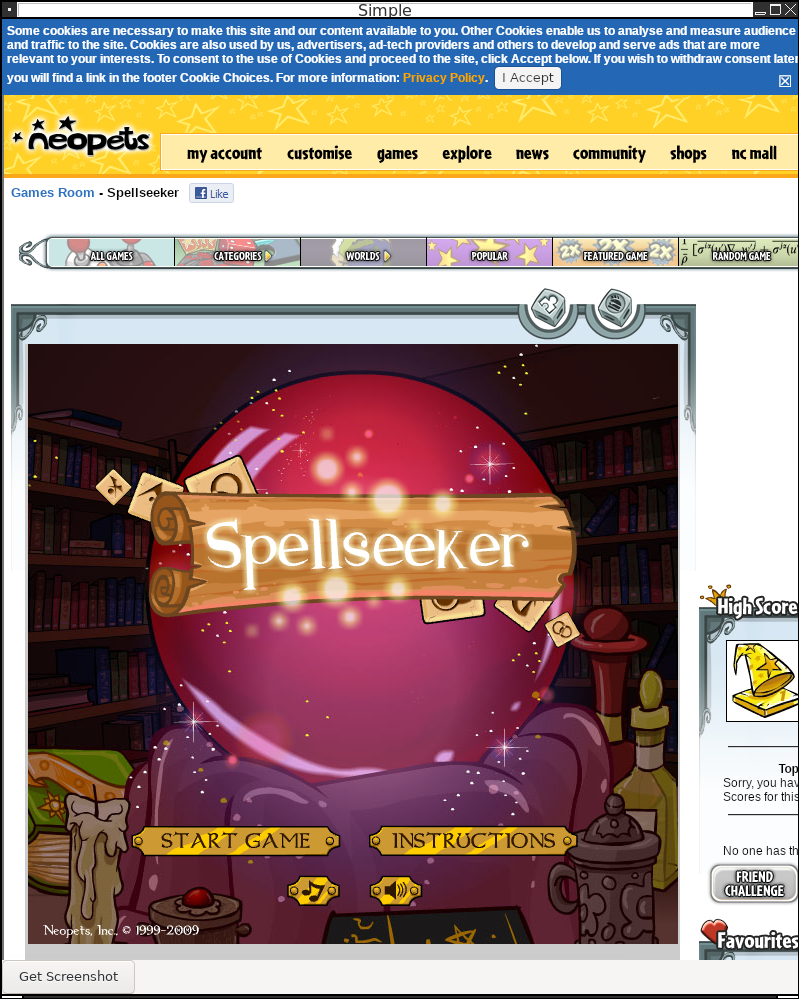
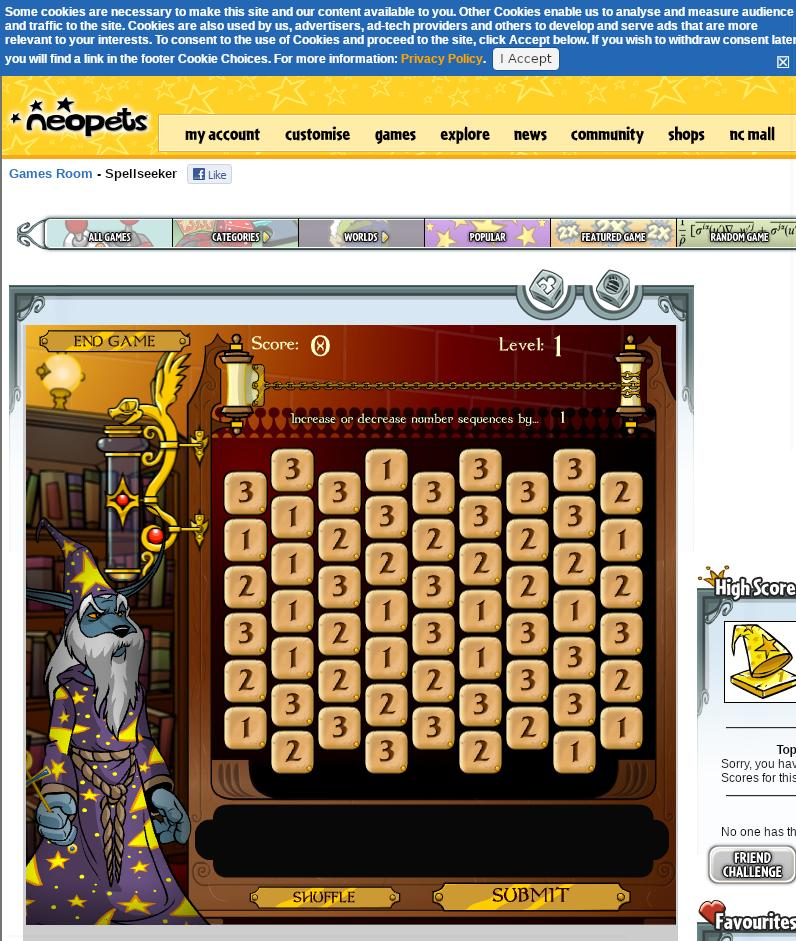
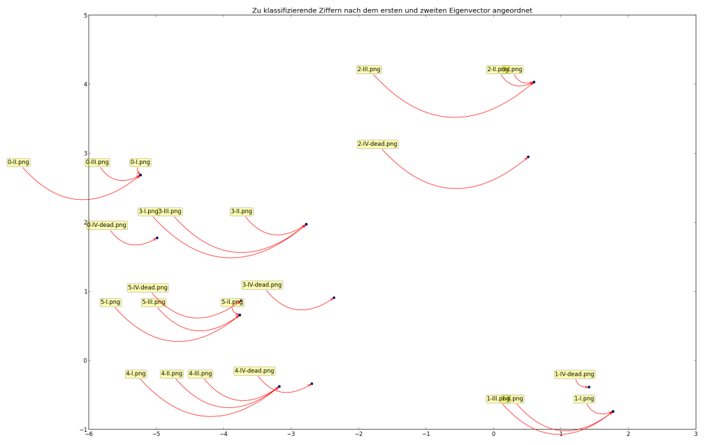
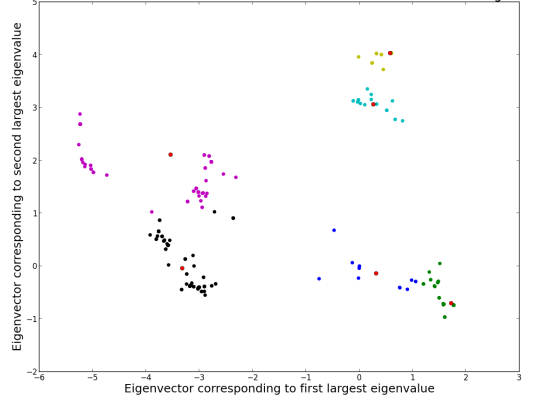
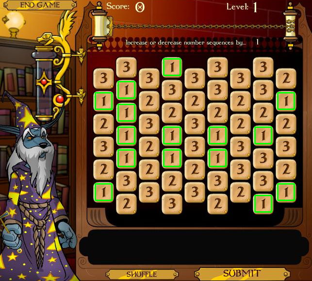
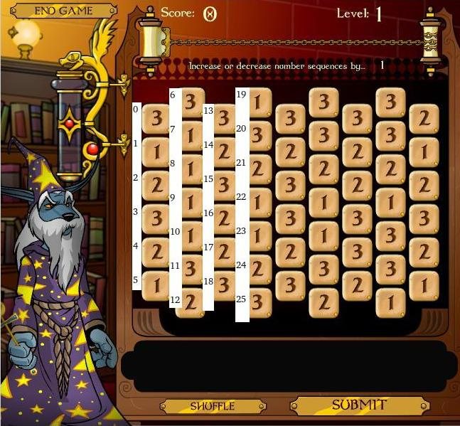
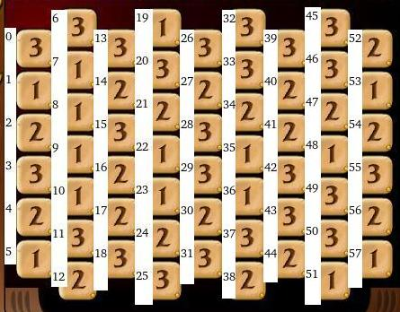
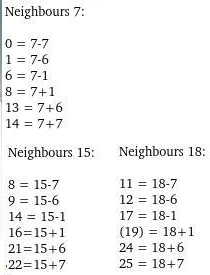
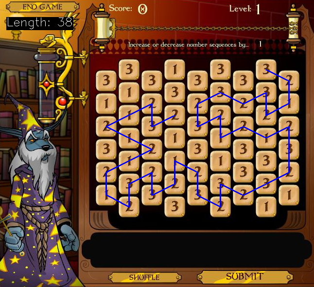

What
Neopets is an online childrens game page that launched in ‘99 [1]. It’s geared towards young children and teenagers. The games are simple, but captivating and intriguing. They are beautifully designed. I used to play some of the games as a kid in the early 2000s. It’s an interesting challenge to automate these games.
Disclaimer: The goal is not to cheat at the games and I don’t run my software routinely once it is completed. This is an academic exercise.

(an old version I wrote in Python around 2012. It’s a rewrite of my VB.Net version from 2010.)
Contents
Contents
When
History
Some 20 years ago I tried my hand at automating the games. I had started automating browser Flash games a long time ago and built automations for countless games. dFence (2005), “Naked Melee” (2005), Stickman Madness (2008), Facebooks “Who has the biggest brain” [2] (2008), GeoChallenge (2009) and likely some more.
Solving simple puzzles designed for humans, purley visually and by imitating human interaction presents a bunch of unique challenges. It is comparable to robot vision, includes pattern recognition and sometimes fairly advanced algorithms. We may need to recognize a playing field, convert it into a graph, find the longest path with it, compute a sequence of clicks and then execute them. It’s a unique and interesting challenge to automate this. The things I’ve learned have been useful in other fields as well.
I’ve come to understatnd that it’s merely important to do some thing, it doesn’t matter what, as all challenges and their solutions may be valuable lessons learned and inspire new ideas in other fields. At the very least one can learn how to write code, but also how the Flash player works, web scraping, UI toolkits and so on.
Background
Background
Over the last 20 years or so I’ve used many different approaches to successfully automate web-based games.
Flash Player
In that time the Flash Player came and went. Originally a browser plug-in to create animations on the web made by FutureWave named “Shockwave player”, acuired by Macromedia in ‘96, then by Adobe in 2005, it was discontinued in December of 2020.
Neopets has also been created, bought, sold and resold over that time. It was started in ‘97 by a student. In 2000 it was incorporated. 2005 to 2014 it was in possesion of Viacom. 2014 to 2023 it was acquired by JumpStart Games. In 2021 it was attmepted to start an NFT and more modern 3D remake. In 2023 it was bought by “World of Neopia Inc.” by people involved in that NFT [3].
Currently the page looks very much like it did in the 2000s. The original flash games work the same as they used to in in a JavaScript Flash Emulator “Ruffle.JS”.
Future of Neopets
Being a lot older now. I wonder about the current business model of Neopets. The core users are generally a lot older (18 years and over) and probably play it purely for nostalgia. The only interesing games for these users are the original Flash games from the early days.
Advertising is likely a legal challenge as the page, even though it has an aging user base, is geared towards children.
Nowadays most web developers see their career chances higher with one of the newer web frameworks. Many of which are inefficient, convoluted and are routinely deprecated. The strength of Neopets lies in it’s simplicity. A Web 1.0 interface, purely HTML and flash player objects. It is probably tough to find developers that have the skill and respect for the old technology and don’t modernize to aggressively, which would turn the fan base away.
The NFT tokens, if they generated real world money and are linked to the in-game scores would mean the games would have to be cheat proof. I don’t see how that would be possible.
I hope they keep the page online, but I don’t see how it can generate revenue. Even funding through donations from the fans would eventually dry up.
In my opinion there lies chance in compelling premium memberships that parents, who grew up with the games, would pay for their children. Or to open-source the entire page so that forks can be hosted here and there in a decentralized community paid way to at least keep it available for self-hosters.
Technology Stack
When automating the games, I started out developing in Visual Basic 6.0 with the Flash Player ActiveX object. I would manually download the *.swf file and then load it in my software. Some time later, in VB.Net, I used the built in web browser component.
There are generally two approaches:
- one is to load the game in the browser, launch it by JavaScript code injection, make sure it’s displayed at a fixed position and size and then control it by taking automated screenshots, analysing them and then sending keyboard and mouse events.
- the other is to load the page, extract the flash game link, load it into a Flash Player instance and then read and write from the internal variables.
I’ve used both approaches, but tend to use the first. It’s more challenging, generally more robust and not as easy to get locked out of. I found that on some of the newer Neopets games (“new” is relative, after 2002 or so) they instantiate a class and throw the pointer away. That way it becomes hard to access the memory of the game.
Over time I’ve completly transitioned from Windows to Linux for most of my hobbyist development work and needed a solutions there.
With Python and Selenium we can control run a webbrowser and control it, in a cross-platform way. This is what you are seeing in the above image.
I’ve also experimented with loading a full flash player in C++ using the now depecated NPAPI, the “Netscape Plugin Application Programming Interface (NPAPI”). It’s a real challenge to set up and I couldn’t get it to run stable. That would allow for more advanced interaction with the flash component, as I’ve done in the past with Visual Basic 6.0.
Recently I found that using C++ with wxWidgets and the wxWebview component is a great way to write robost code for this purpose.
How
Implementation
As mentioned above I will outline how to automate a Neopets game, but I won’t provide the complete steps or code. It should be interesting nevertheless.
In this example I’ll show how to automate the game “Spellseeker” (on the German version of Neopets: “Zeichen der Magie”).
About the Game
In the game “Spellseeker” the player needs to click on stones in order such that the values increase and decrease by a set amount.
Within a computer science mindset: this is a perfect use case for graphs and the depth first search algorithm. But first we need to load the game, recognize the digits on the playing field and prepare transformations of the coordinate system.
Loading the Page
In a previous post I wrote about web scraping using C++, wxWidgets and wxWebView (see Web-Scraping). We can use that exact same approach to load a Neopets game. Since WebKit can run JavaScript and Flash is being emulated with Rumble.JS, the games load fine.

Taking Screenshots
Next we need to be able to take a screenshot of the game in order for our code to analyse it.
For this I’ve written a simple function. If we were to use wxScreenDC dcScreen; instead of wxClientDC dcScreen(m_webView); we would take a screenshot of the entire desktop. The Blit function copies the widgets graphics buffer to the memory location of the wxBbitmap we instantiate before-hand.
void screenshot() {
wxClientDC dcScreen(m_webView);
wxCoord screenWidth, screenHeight;
dcScreen.GetSize(&screenWidth, &screenHeight);
wxBitmap screenshot(screenWidth, screenHeight,-1);
wxMemoryDC memDC;
memDC.SelectObject(screenshot);
memDC.Blit(
0, // target x coordinate
0, // target y coordinate
screenWidth, // width
screenHeight, // height
&dcScreen, // source
0, // source x coordinate
0 // source y coordinate
);
memDC.SelectObject(wxNullBitmap);
std::string fileName = "scrn-" + getTimestamp() + ".jpg";
screenshot.SaveFile(fileName.c_str(),wxBITMAP_TYPE_JPEG);
}
With that code we get nice screenshots of the game such as this one:

Recognizing the stones on the playing field
In order to recognize stones on the field there are multiple ways:
- I used to manually measure the pixel locations in an graphics editor like “MS Paint” or, on Linux, in “KolourPaint”. Convert the images to black and white and compare the number of overlapping black pixels with previously stored template images.
- at some point I started using OCR text recognition with either “Tesseract OCR” in Python or “Asprise OCR” in VB.NET

(the VB.Net version from 2010 using an evaluation version of Asprise OCR)
- I’ve even played with very academic approaches: a variant of the “Eigenfaces” algorithm, subtracting each image from a mean image, applying principle component analysis, clustering and then applying the function to new digits to recognize digits by their euclidean distance to the cluster centers. Basically rolling my own digit recognition.


This time around I’ll go with a more robust and easy method: Image Matching with OpenCV.
By noting down the positions of elements of the playing field, we can write a simple function to retrieve “template” images.
std::vector<SImages> m_images {
[...]
{"play_game", "scrn-2025-08-14_111133.jpg", 292, 770, 406, 794},
[...]
{"3", "scrn-2025-08-14_111144.jpg", 228, 476, 228+34, 476+34},
{"1", "scrn-2025-08-14_111144.jpg", 228, 522, 228+34, 522+34},
{"2", "scrn-2025-08-14_111144.jpg", 228, 570, 228+34, 570+34},
};
cv::Mat getImage(std::string tag) {
for(auto& image : m_images) {
if(image.tag == tag) {
cv::Mat original = cv::imread(image.source);
cv::Mat cropped = original(cv::Range(image.y1, image.y2), cv::Range(image.x1, image.x2));
return cropped;
}
}
return cv::Mat();
}
Using OpenCV’s matchTemplate function we can locate template images in a screenshot. With a bit of modification we can find multiple occurrences in the image.
struct SResult {
std::string tag;
int x;
int y;
};
std::vector<SResult> findMultipleInImage(std::string imageFile, std::string imageTag) {
cv::Mat image = cv::imread(imageFile);
cv::Mat templateImage = getImage(imageTag);
cv::Mat res;
cv::matchTemplate(image, templateImage, res, cv::TM_CCOEFF_NORMED);
cv::threshold(res, res, 0.9, 1., cv::THRESH_TOZERO);
std::vector<SResult> results;
while (true) {
double minval, maxval, threshold = 0.9;
cv::Point minloc, maxloc;
cv::minMaxLoc(res, &minval, &maxval, &minloc, &maxloc);
if (maxval >= threshold) {
cv::floodFill(res, maxloc, cv::Scalar(0), 0, cv::Scalar(.1), cv::Scalar(1.));
results.push_back({imageTag, maxloc.x, maxloc.y});
} else {
break;
}
}
return results;
}
This works flawlessly as can be seen when drawing rectangles around the ‘1’ digit found in the screenshot:

And if we run that against the entire set of known template images, collecting all locations and then sorting the result by y- and then x-coordinates, we can read out the playing field.
std::vector<SResult> findAll(std::string imageFile) {
// -- find coordinates of all known template images
std::vector<SResult> results;
for(auto& image : m_images) {
std::vector<SResult> results_ = findMultipleInImage(imageFile, image.tag, false);
results.insert(results.end(), results_.begin(), results_.end());
}
// -- sort by coordinates (requires stable sort)
std::stable_sort(begin(results), end(results), [](SResult a, SResult b) {return a.y < b.y; });
std::stable_sort(begin(results), end(results), [](SResult a, SResult b) {return a.x < b.x; });
// -- print
for(auto& result : results) {
std::cout << result.x << "," << result.y << "," << result.tag << " | " << std::endl;
}
return results;
}

The read out of results.tag is
3 1 2 3 2 1 3 1 1 1 1 3 2 3 2 3 2 2 3 1 3 2 1 1 2 3 3 2 3 3 2 3 3 3 2 1 1 3 2 3 2 2 3 3 2 3 3 2 1 3 3 1 2 1 2 3 2 1
Building a Graph
Next we need to somehow represent, as a graph, which moves are valid. This will serve as the input for the “depth first search” algorithm later.
Coordinate Space
I’ve messed around with coordinate transforms a bit over time trying to come up with a mapping to find the neighbours for a given stone.


The challenge here is that you need to respect the borders and out-of-bounds conditions. Additionally every other column has a different length.
In the end the easiest solution was to just use a for-loop and count along to get a index -> (field_x,field_y) mapping and the reverse:
auto idxToCoor = [](int idx) {
int x_ = 0;
int y_ = 0;
for(int i = 0; i < 58; i++) {
if(idx == i) {
return SPoint{x_, y_};
}
y_ += 1;
if(i == 5 || i == 12 || i == 18 || i == 25 || i == 31 || i == 38 || i == 44 || i == 51 || i == 57) {
x_ += 1;
y_ = 0;
}
}
return SPoint{-1, -1};
};
A similar approach works for the reverse.
Finding Neighbours
We can then find all neighbouring stones. The addPoint function here just skips out-of-bounds conditions.
auto neighboursOfNode = [&](SPoint coor) {
std::vector<SPoint> neighbours;
if(coor.x % 2 == 0) {
addPoint(neighbours, SPoint{coor.x, coor.y - 1});
addPoint(neighbours, SPoint{coor.x + 1, coor.y});
addPoint(neighbours, SPoint{coor.x + 1, coor.y + 1});
addPoint(neighbours, SPoint{coor.x, coor.y + 1});
addPoint(neighbours, SPoint{coor.x - 1, coor.y + 1});
addPoint(neighbours, SPoint{coor.x - 1, coor.y});
} else {
addPoint(neighbours, SPoint{coor.x, coor.y - 1});
addPoint(neighbours, SPoint{coor.x + 1, coor.y - 1});
addPoint(neighbours, SPoint{coor.x + 1, coor.y});
addPoint(neighbours, SPoint{coor.x, coor.y + 1});
addPoint(neighbours, SPoint{coor.x - 1, coor.y});
addPoint(neighbours, SPoint{coor.x - 1, coor.y - 1});
}
return neighbours;
};
Filtering Neighbours
We can then go through all neighbouring nodes discarding the nodes which don’t have +/- 1 as per the game rules.
auto adjacentEdges = [&](std::vector<SResult> nodes, int nodeId) {
std::vector<int> result;
SResult a = nodes[nodeId];
SPoint c = idxToCoor(nodeId);
int nodeValue = std::stoi(a.tag);
std::vector<SPoint> neighbours = neighboursOfNode(c);
for(auto& n : neighbours) {
int neighbourId = coorToIdx(n.x, n.y);
int neighbourValue = std::stoi(nodes[neighbourId].tag);
if(std::abs(nodeValue - neighbourValue) == 1) {
result.push_back(neighbourId);
}
}
return result;
};
Solving Algorithm
With the adjacentEdges-function ready we can finally implement the depth first search algorithm in order to find the longest path.
The idea here is to keep a stack of paths. In each iteration we take a path off of the stack and try to extend it by one move. If that succeeds, we re-add it to the stack, otherwise we discard the path. During this we keep track of the longest path found so far.
auto dfs = [&](std::vector<SResult> nodes, int startNode) {
std::vector<int> longestPath;
std::stack<std::vector<int>> stackOfPaths;
stackOfPaths.push(std::vector<int>{startNode});
while(!stackOfPaths.empty()) {
// -- get a path from the stack
std::vector<int> path = stackOfPaths.top();
stackOfPaths.pop();
// -- keep copy of longest
if(path.size() > longestPath.size()) {
longestPath = std::vector<int>(path);
}
// -- try to extend current path by one adjacentEdge
for(int n: adjacentEdges(nodes, path.back())) {
if(!vectorContains(path, n)) {
std::vector<int> copy(path);
copy.push_back(n);
stackOfPaths.push(copy);
}
}
}
return longestPath;
};
A small challenge during implementation of this in C++ was making sure we deal with copies of the vector where necessary. C++ favors pointers over objects for performance, but sometimes we want to have a copy of the underlying data, so that it isn’t modified in the next iteration.
In order for this to work we would need to run this from every one of the 57 stones on the field to find the overall longest path. This approach can be optimized by starting the search only on fields that have only a single neighbour as these, by definition, must be the start or ending points of the longest possible path.
One run of this algorithm from a single starting point and visualizing the path - not necessarily the longest path - yields this:

We see that the path starting at the selected stone is not optimal. Starting the algorithm one stone higher or lower would have yielded a path which would have been one stone longer.
Entering the Result
Using the idxToCoor function, that was also used to visualize the path, we can get the coordinates to perform mouse clicks on. Running the clicks in sequence could automatically enter the path.
Progress
Conclusion
As we’ve seen automating flash games can involve interesting algorithms and computer science concepts. We’ve used a graphical user interface (using wxWidgets) to load a browser, made screenshots, built in digit recognition (using OpenCV), converted that to a graph and ran a “depth first search” algorithm on the graph to solve the game.
There were other programming languages like VB.Net, Python with Selenium and OCR techniques, the Flash player object and so on involved in previous approaches. A lot can be learned from automating web browser games.
1] https://www.neopets.com/ 2] https://en.wikipedia.org/wiki/Who_Has_The_Biggest_Brain%3F 3] https://en.wikipedia.org/wiki/Neopets